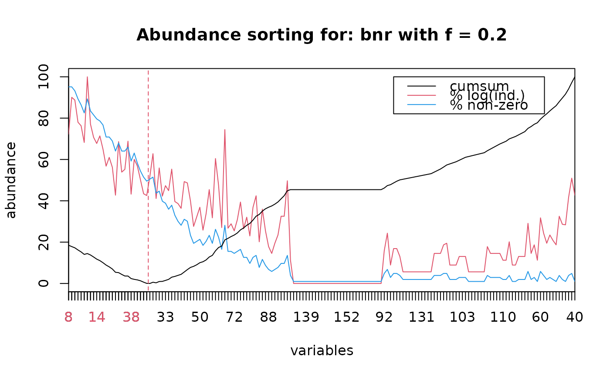

Sort variables by abundance
abund.RdSort variables (usually species in a species x stations matrix) in function of
their abundance, either in number of non-null values, or in number of
individuals (in log). The f coefficient allows adjusting weight given to each of these two criteria.
abund(x, f = 0.2)
# S3 method for class 'abund'
extract(e, n, left = TRUE, ...)
# S3 method for class 'abund'
identify(x, label.pts = FALSE, lvert = TRUE, lvars = TRUE, col = 2, lty = 2, ...)
# S3 method for class 'abund'
lines(x, n = x$n, lvert = TRUE, lvars = TRUE, col = 2, lty = 2, ...)
# S3 method for class 'abund'
plot(x, n = x$n, lvert = TRUE, lvars = TRUE, lcol = 2, llty = 2, all = TRUE,
dlab = c("cumsum", "% log(ind.)", "% non-zero"), dcol = c(1,2,4),
dlty = c(par("lty"), par("lty"), par("lty")), dpos = c(1.5, 20), type = "l",
xlab = "variables", ylab = "abundance",
main = paste("Abundance sorting for:",x$data, "with f =", round(x$f, 4)), ...)
# S3 method for class 'abund'
print(x, ...)
# S3 method for class 'summary.abund'
print(x, ...)
# S3 method for class 'abund'
summary(object, ...)Arguments
- x
A data frame containing the variables to sort according to their abundance in columns for
abund, or an 'abund' object for the methods- f
Weight given to the number of individuals criterium (strictly included between 0 and 1; weight for the non-null values is
1-f. The default value,f=0.2, gives enough weight to the number of non-null values to get abundant species according to this criterium first, but allowing to get at the other extreme rare, but locally abundant species- object
An 'abund' object returned by
abund- e
An 'abund' object returned by
abund- n
The number of variables selected at left
- type
the type of graph to plot. By default, lines with 'l'
- lvert
If
TRUEthen a vertical line separate the n variables at left from the others- lvars
If
TRUEthen the x-axis labels of the n left variables are printed in a different color to emphasize them- lcol
The color to use to draw the vertical line (
lvert=TRUE) and the variables labels (lvars=TRUE) at left of the nth variable. By default, color 2 is used- llty
The style used to draw the vertical line (
lvert=TRUE). By default, a dashed line is used- xlab
the label of the x-axis
- ylab
the label of the y-axis
- main
the main title of the graph
- all
If
TRUEthen all lines are drawn (cumsum, %log(ind.) and %non-null). IfFALSE, only the cumsum line is drawn- dlab
The legend labels
- dcol
Colors to use for drawing the various curves on the graph
- dlty
The line style to use for drawing the various curves on the graph
- dpos
The position of the legend box on the graph (coordinates of its top-left corner). A legend box is drawn only if
all=TRUE- col
The color to use to draw lines
- lty
The style used to draw lines
- ...
additional parameters
- label.pts
Do we have to label points on the graph or to chose an extraction level with the
identify()method?- left
If
TRUE, the n variables at left are extracted. Otherwise, the total-n variables at right are extracted
Details
Successive sorts can be applied. For instance, a first sort with
f = 0.2, followed by an extraction of rare species and another sort
with f = 1 allows to collect only rare but locally abundant species.
Value
An object of type 'abund' is returned. It has methods print(),
summary(), plot(), lines(), identify(), extract().
References
Ibanez, F., J.-C. Dauvin & M. Etienne, 1993. Comparaison des évolutions à long terme (1977-1990) de deux peuplements macrobenthiques de la baie de Morlaix (Manche occidentale): relations avec les facteurs hydroclimatiques. J. Exp. Mar. Biol. Ecol., 169:181-214.
See also
Examples
data(bnr)
bnr.abd <- abund(bnr)
summary(bnr.abd)
#>
#> Sorting of descriptors according to abundance for: bnr
#>
#> Coefficient f: 0.2
#> 163 variables sorted
#>
#> Number of individuals (% of most abundant in log):
#> S8 S2 S3 S4 S6 S13 S1
#> 72.273641 90.069317 88.739428 78.019800 76.302796 68.235798 100.000000
#> S5 S10 S14 S9 S15 S21 S17
#> 77.095883 70.713663 67.746617 71.405852 65.019607 56.765809 61.013010
#> S22 S39 S12 S26 S25 S11 S38
#> 56.217342 42.731127 68.629878 53.892117 55.223940 68.848694 43.220902
#> S19 S20 S29 S37 S41 S27 S16
#> 60.065505 56.854955 50.145792 43.416565 42.561076 51.790497 62.798247
#> S45 S23 S43 S33 S36 S24 S47
#> 41.106427 55.899523 42.254638 47.328915 44.929107 55.322688 39.646573
#> S49 S52 S31 S32 S46 S67 S58
#> 38.667117 36.354344 49.292179 48.648509 39.888968 27.616484 32.237324
#> S50 S71 S54 S35 S61 S18 S34
#> 36.889898 25.804639 33.768615 45.427018 31.764202 60.458819 47.328915
#> S68 S7 S69 S64 S72 S62 S48
#> 27.056287 74.463292 26.760995 28.868131 25.459071 30.908713 39.396718
#> S70 S59 S78 S51 S42 S80 S53
#> 26.454557 32.082659 23.004660 36.803057 42.431159 20.176537 35.976618
#> S73 S88 S100 S84 S77 S55 S56
#> 25.459071 17.840663 14.548434 19.470036 23.468766 32.538086 32.538086
#> S30 S112 S135 S136 S137 S138 S139
#> 49.694585 11.256205 0.000000 0.000000 0.000000 0.000000 0.000000
#> S140 S141 S142 S143 S144 S145 S146
#> 0.000000 0.000000 0.000000 0.000000 0.000000 0.000000 0.000000
#> S147 S148 S149 S150 S151 S152 S153
#> 0.000000 0.000000 0.000000 0.000000 0.000000 0.000000 0.000000
#> S154 S155 S156 S157 S158 S159 S160
#> 0.000000 0.000000 0.000000 0.000000 0.000000 0.000000 0.000000
#> S161 S162 S163 S92 S74 S114 S90
#> 0.000000 0.000000 0.000000 15.800081 24.324255 8.920332 16.884308
#> S91 S107 S119 S120 S121 S125 S127
#> 16.884308 13.068049 5.628103 5.628103 5.628103 5.628103 5.628103
#> S128 S131 S132 S133 S134 S93 S96
#> 5.628103 5.628103 5.628103 5.628103 5.628103 14.548434 14.548434
#> S98 S85 S83 S113 S115 S117 S102
#> 14.548434 18.696152 19.470036 8.920332 8.920332 8.920332 13.068049
#> S103 S108 S122 S123 S124 S126 S129
#> 13.068049 13.068049 5.628103 5.628103 5.628103 5.628103 5.628103
#> S130 S89 S94 S95 S97 S101 S110
#> 5.628103 17.840663 14.548434 14.548434 14.548434 14.548434 11.256205
#> S111 S81 S116 S118 S104 S105 S106
#> 11.256205 20.176537 8.920332 8.920332 13.068049 13.068049 13.068049
#> S63 S99 S87 S109 S60 S75 S82
#> 29.096868 14.548434 18.696152 11.256205 31.764202 24.324255 19.470036
#> S76 S79 S86 S57 S65 S66 S44
#> 23.468766 20.826454 18.696152 32.538086 28.632763 28.390368 41.700812
#> S28 S40
#> 50.964058 42.688947
#>
#> Percent of non-zero values:
#> S8 S2 S3 S4 S6 S13 S1
#> 95.1456311 95.1456311 93.2038835 89.3203883 86.4077670 82.5242718 89.3203883
#> S5 S10 S14 S9 S15 S21 S17
#> 83.4951456 81.5533981 79.6116505 78.6407767 76.6990291 70.8737864 70.8737864
#> S22 S39 S12 S26 S25 S11 S38
#> 68.9320388 64.0776699 67.9611650 64.0776699 64.0776699 66.0194175 59.2233010
#> S19 S20 S29 S37 S41 S27 S16
#> 63.1067961 58.2524272 54.3689320 51.4563107 49.5145631 50.4854369 51.4563107
#> S45 S23 S43 S33 S36 S24 S47
#> 43.6893204 44.6601942 39.8058252 38.8349515 35.9223301 37.8640777 33.0097087
#> S49 S52 S31 S32 S46 S67 S58
#> 30.0970874 28.1553398 31.0679612 30.0970874 23.3009709 19.4174757 20.3883495
#> S50 S71 S54 S35 S61 S18 S34
#> 21.3592233 18.4466019 20.3883495 23.3009709 19.4174757 26.2135922 22.3300971
#> S68 S7 S69 S64 S72 S62 S48
#> 16.5048544 28.1553398 15.5339806 15.5339806 14.5631068 15.5339806 16.5048544
#> S70 S59 S78 S51 S42 S80 S53
#> 12.6213592 12.6213592 9.7087379 12.6213592 13.5922330 7.7669903 11.6504854
#> S73 S88 S100 S84 S77 S55 S56
#> 8.7378641 6.7961165 5.8252427 6.7961165 7.7669903 9.7087379 9.7087379
#> S30 S112 S135 S136 S137 S138 S139
#> 13.5922330 3.8834951 0.9708738 0.9708738 0.9708738 0.9708738 0.9708738
#> S140 S141 S142 S143 S144 S145 S146
#> 0.9708738 0.9708738 0.9708738 0.9708738 0.9708738 0.9708738 0.9708738
#> S147 S148 S149 S150 S151 S152 S153
#> 0.9708738 0.9708738 0.9708738 0.9708738 0.9708738 0.9708738 0.9708738
#> S154 S155 S156 S157 S158 S159 S160
#> 0.9708738 0.9708738 0.9708738 0.9708738 0.9708738 0.9708738 0.9708738
#> S161 S162 S163 S92 S74 S114 S90
#> 0.9708738 0.9708738 0.9708738 4.8543689 6.7961165 2.9126214 4.8543689
#> S91 S107 S119 S120 S121 S125 S127
#> 4.8543689 3.8834951 1.9417476 1.9417476 1.9417476 1.9417476 1.9417476
#> S128 S131 S132 S133 S134 S93 S96
#> 1.9417476 1.9417476 1.9417476 1.9417476 1.9417476 3.8834951 3.8834951
#> S98 S85 S83 S113 S115 S117 S102
#> 3.8834951 4.8543689 4.8543689 1.9417476 1.9417476 1.9417476 2.9126214
#> S103 S108 S122 S123 S124 S126 S129
#> 2.9126214 2.9126214 0.9708738 0.9708738 0.9708738 0.9708738 0.9708738
#> S130 S89 S94 S95 S97 S101 S110
#> 0.9708738 3.8834951 2.9126214 2.9126214 2.9126214 2.9126214 1.9417476
#> S111 S81 S116 S118 S104 S105 S106
#> 1.9417476 3.8834951 0.9708738 0.9708738 1.9417476 1.9417476 1.9417476
#> S63 S99 S87 S109 S60 S75 S82
#> 5.8252427 1.9417476 2.9126214 0.9708738 5.8252427 3.8834951 1.9417476
#> S76 S79 S86 S57 S65 S66 S44
#> 2.9126214 1.9417476 0.9708738 3.8834951 1.9417476 0.9708738 3.8834951
#> S28 S40
#> 4.8543689 0.9708738
plot(bnr.abd, dpos=c(105, 100))
bnr.abd$n <- 26
# To identify a point on the graph, use: bnr.abd$n <- identify(bnr.abd)
lines(bnr.abd)

bnr2 <- extract(bnr.abd)
names(bnr2)
#> [1] "S8" "S2" "S3" "S4" "S6" "S13" "S1" "S5" "S10" "S14"
#> [11] "S9" "S15" "S21" "S17" "S22" "S39" "S12" "S26" "S25" "S11"
#> [21] "S38" "S19" "S20" "S29" "S37" "S41" "S27" "S16" "S45" "S23"
#> [31] "S43" "S33" "S36" "S24" "S47" "S49" "S52" "S31" "S32" "S46"
#> [41] "S67" "S58" "S50" "S71" "S54" "S35" "S61" "S18" "S34" "S68"
#> [51] "S7" "S69" "S64" "S72" "S62" "S48" "S70" "S59" "S78" "S51"
#> [61] "S42" "S80" "S53" "S73" "S88" "S100" "S84" "S77" "S55" "S56"
#> [71] "S30" "S112" "S135" "S136" "S137" "S138" "S139" "S140" "S141" "S142"
#> [81] "S143" "S144" "S145" "S146" "S147" "S148" "S149" "S150" "S151" "S152"
#> [91] "S153" "S154" "S155" "S156" "S157" "S158" "S159" "S160" "S161" "S162"
#> [101] "S163" "S92" "S74" "S114" "S90" "S91" "S107" "S119" "S120" "S121"
#> [111] "S125" "S127" "S128" "S131" "S132" "S133" "S134" "S93" "S96" "S98"
#> [121] "S85" "S83" "S113" "S115" "S117" "S102" "S103" "S108" "S122" "S123"
#> [131] "S124" "S126" "S129" "S130" "S89" "S94" "S95" "S97" "S101" "S110"
#> [141] "S111" "S81" "S116" "S118" "S104" "S105" "S106" "S63" "S99" "S87"
#> [151] "S109" "S60" "S75" "S82" "S76" "S79" "S86" "S57" "S65" "S66"
#> [161] "S44" "S28" "S40"